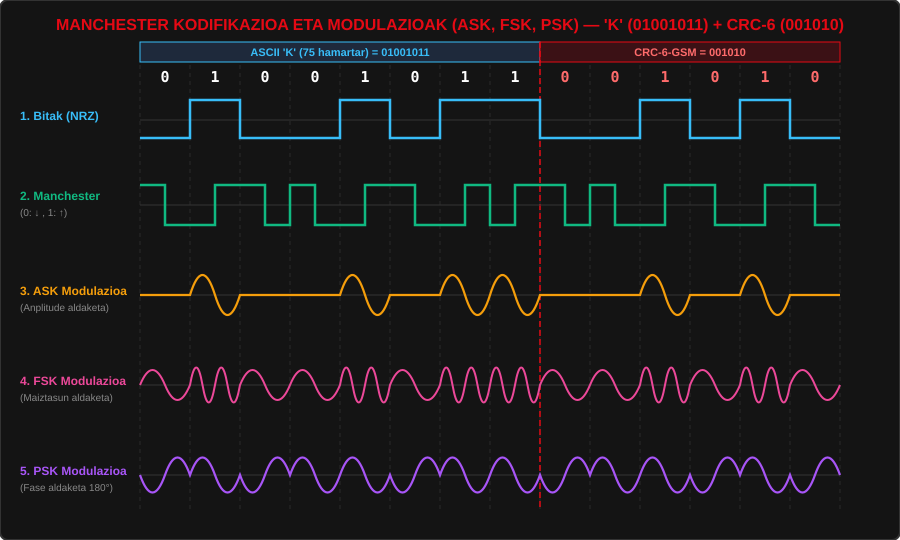

Sareak: OSI 1. eta 2. Mailak, CRC-6-GSM eta Modulazioak
Atal honetan 1. Erronkako Windows Server zerbitzaria eta klaseko ekipoak sarera konektatzeko erabili dugun azpiegitura fisikoa (OSI 1. maila) eta datu-lotura maila (OSI 2. maila) azaltzen dira.
1. OSI Ereduaren Lehen Bi Mailak: Patch Panel eta Switch Lotura
Klasean ikasleok egindako UTP Cat6 kableekin (T568B estandarra jarraituz) gure ekipoak Patch Panelera konektatu ditugu, eta bertatik latiguillo bidez Switchera:
- 1. Maila — Maila Fisikoa (Physical Layer): Bitak seinale elektriko edo elektromagnetiko bihurtzeaz arduratzen da. Proiektuan ikasleok grimpatutako RJ-45 konektoreak, UTP kableak, Patch Panela, Manchester kodifikazioa eta ASK/FSK/PSK modulazioak maila honetan kokatzen dira.
- 2. Maila — Datu-Lotura Maila (Data Link Layer): Bitak trametan (frames) antolatzen ditu, gailuen MAC helbideak kudeatzen ditu Switch-aren bidez eta transmisio-erroreak detektatzen ditu CRC (Cyclic Redundancy Check) algoritmoa erabiliz.
2. Pasahitza ASCIIra Bihurtzea eta CRC-6-GSM Gehitzea
Sistemara sartzeko erabilitako pasahitzetako bat Kuper-67 da. Lehenik eta behin, karaktere bakoitza bere ASCII balio hamartar, hamaseitar eta bitarrera (8 bit) pasatu dugu:
| Karakterea | ASCII Hamartarra | ASCII Hamaseitarra (Hex) | ASCII Bitarra (8 bit) |
|---|---|---|---|
| 'K' (Kalkulurako aukeratua) | 75 | 0x4B | 01001011 |
| 'u' | 117 | 0x75 | 01110101 |
| 'p' | 112 | 0x70 | 01110000 |
| 'e' | 101 | 0x65 | 01100101 |
| 'r' | 114 | 0x72 | 01110010 |
| '-' | 45 | 0x2D | 00101101 |
| '6' | 54 | 0x36 | 00110110 |
| '7' | 55 | 0x37 | 00110111 |
CRC-6-GSM Kalkulua Pausoz Pauso ('K' = 01001011)
Eskatutako polinomio sortzailea CRC-6-GSM da: x6 + x5 + x3 + x2 + x + 1.
- Polinomio sortzailea bitarrez G(x): 1·x6 + 1·x5 + 0·x4 + 1·x3 + 1·x2 + 1·x1 + 1·x0 =
1101111(7 bit, 6. mailakoa). - Mezua M(x):
01001011('K' letra). - 6 zero gehituta (26·M):
01001011 000000.
3. Manchester Kodifikazioa eta Modulazioen Marrazkiak (ASK, FSK, PSK)
Lortutako 14 biteko trama (01001011 001010) kabletik eta uhinetatik bidaltzeko, honako kodifikazio eta modulazio grafikoak marraztu eta webgunera igo ditugu:

| Teknika Mota | Izena | Funtzionamendua Marrazkian |
|---|---|---|
| Kodifikazio Digitala | Manchester (IEEE 802.3) | Bit bakoitzaren erdian trantsizio bat dago: 0 = Goitik-Behera (↓), 1 = Behetik-Gora (↑). Erlojuaren sinkronizazioa bermatzen du Ethernet kableetan. |
| Modulazio Analogikoa | ASK (Amplitude Shift Keying) | Uhin garraiatzailearen anplitudea aldatzen da: 1 denean uhina dago, eta 0 denean anplitudea zero da (lerro laua). |
| Modulazio Analogikoa | FSK (Frequency Shift Keying) | Uhinaren maiztasuna (frekuentzia) aldatzen da: 0 bitak maiztasun baxua du (ziklo gutxi) eta 1 bitak maiztasun altua (ziklo bikoitza). |
| Modulazio Analogikoa | PSK (Phase Shift Keying) | Uhin garraiatzailearen fasea 180 gradu aldatzen da bit-aldaketa dagoenean (1 fase positiboan hasten da eta 0 alderantzizko fasean). |
4. Hari Gabeko Gailu Batetik Testeatzea (Mugikorra eta Eramangarria)
Webgunea Windows Server-eko IIS zerbitzarian argitaratu ondoren, Switch-era konektatutako Wi-Fi sarbide-puntuaren (Access Point) bidez hari gabeko gailuetatik testeatu dugu:
- Windows Server IIS konfigurazioa: Webgune estatikoa zerbitzari lokalean jarri da martxan (
192.168.1.10:80). - Hari gabeko konexioa (Wi-Fi): Telefono mugikorra eta ordenagailu eramangarria klaseko Wi-Fi sarera konektatu ditugu (sare bereko IP helbidea jasoz, adib.
192.168.1.55). - Konektagarritasun proba:
ping 192.168.1.10komandoarekin pakete-galerarik ez dagoela egiaztatu da. - Nabigatzailean bistaratzea: Mugikorreko eta eramangarriko nabigatzaileetan orri guztiak, taulak eta modulazio-marrazkiak ondo ikusten direla egiaztatu da (CSS
@mediaerantzunkorrari esker).